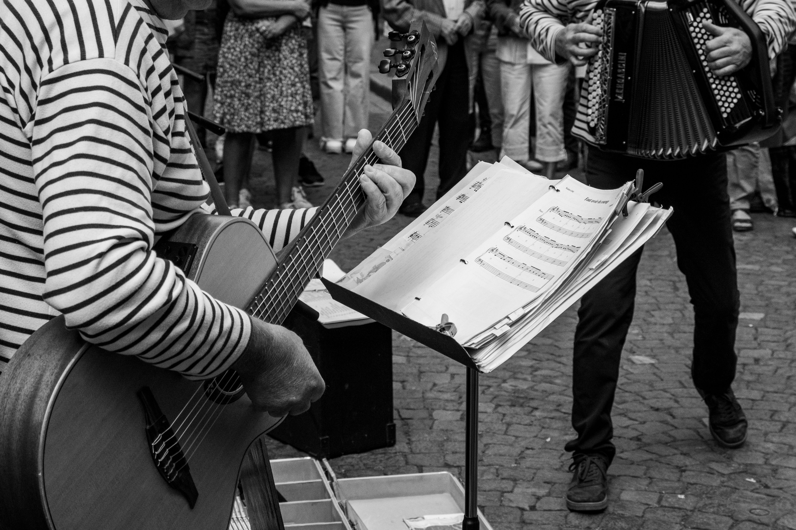

¿Cómo a influido la música en mi vida?
¿como la musica empezo a influir en mi vida?
desde que era pequeño mi hermano tocaba la guitarra y yo siempre lo miraba y me fasinaba empeze a escuchar la misma musica que el y me encantaba me la pasaba todo el dia esuchando musica cuando estaba triste feliz enojado en todos lados a todo momento tenia musica puesta entonces yo tambien empeze a tocar la guitarra apartir de eso empeze a hacer amistades a travez del gusto por la musica me a llevado a conocer gente muy buena y superar situaciones
¿como la musica me a ayudado?
desde que aprendi a tocar la guitarra me obsesione con la musica mucho mas tocar un instrumento en los dias donde me sentia vacio me hacia sentir mucho mejor si estaba triste tocaba la guitarra o escuchaba musica siempre me a acompañado en los momentos mas dificil y en los mas felices
mis sueños con la musica
desde pequeño e soñado con tocar en un escenario o un estadio lleno de gente que las personas escuchen mi musica se identifiquen con la musica y disfruten de ella poder hacer dinero de la musica y poder ser financialmente estable apartir de la musica quiero que me esuchen en todos lados y mi musica sea apreciada

Como voy hoy dia con la musica
este ultimo año a sido de los mas productivos en mi carerra musica e grabado el bajo para varias canciones de mis camaradas practico todo el dia y e mejorado demasiado me invitan a tokines para que les toque el bajo y me estoy haciendo conocido por tocar el bajo ya estamos sacando musica con mis amigos y estan agarrando buena atencion solo falta seguir echandole ganas y esperara a que de frutos

John Smith
Erat netus